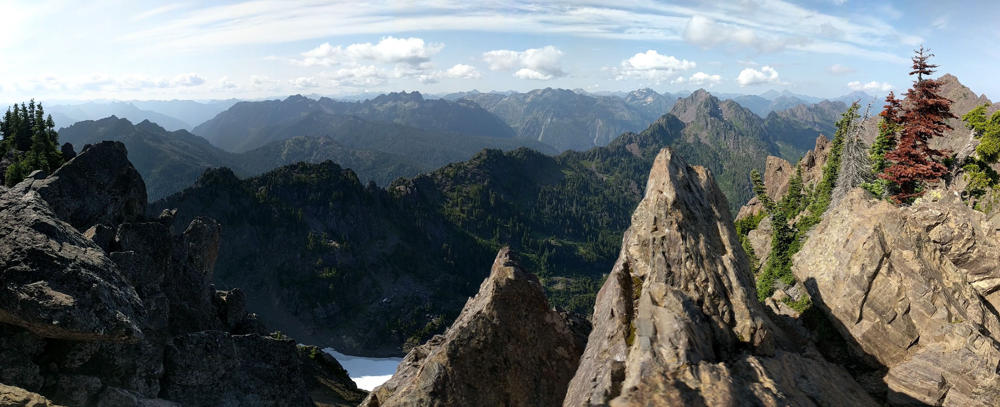
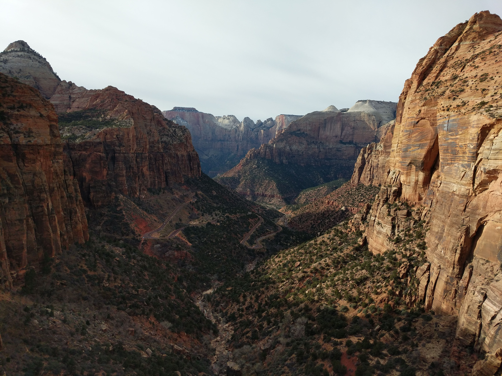
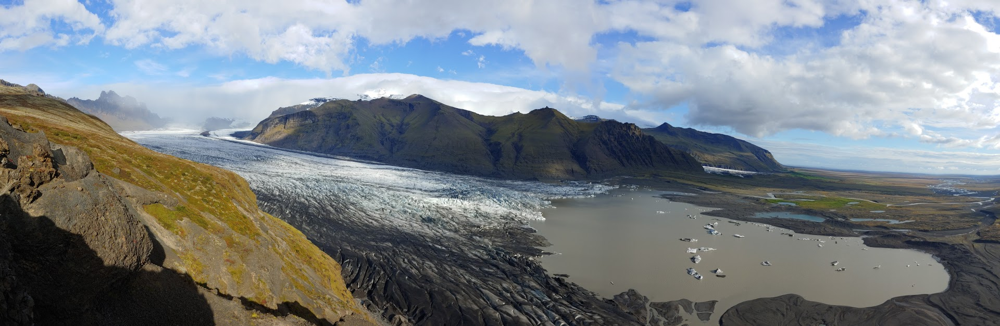
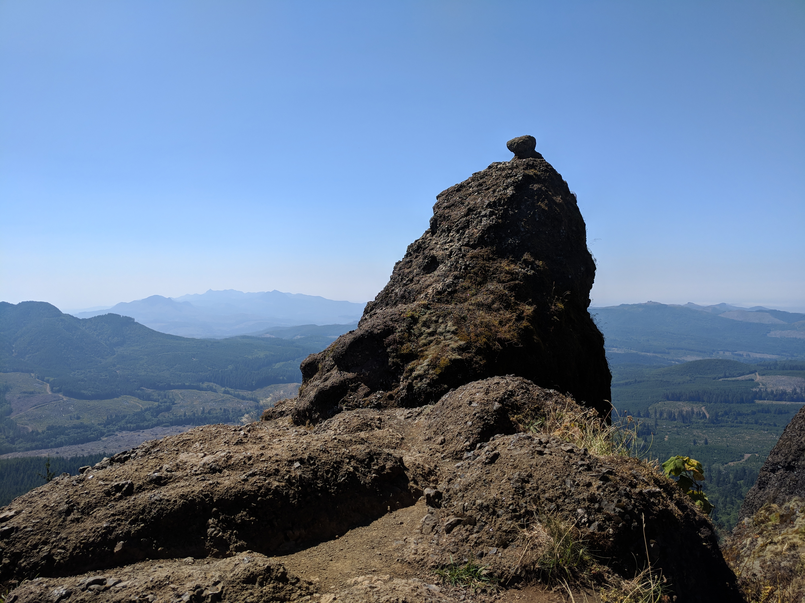
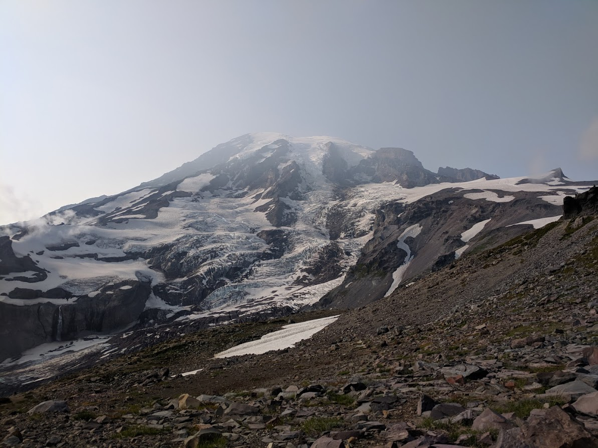
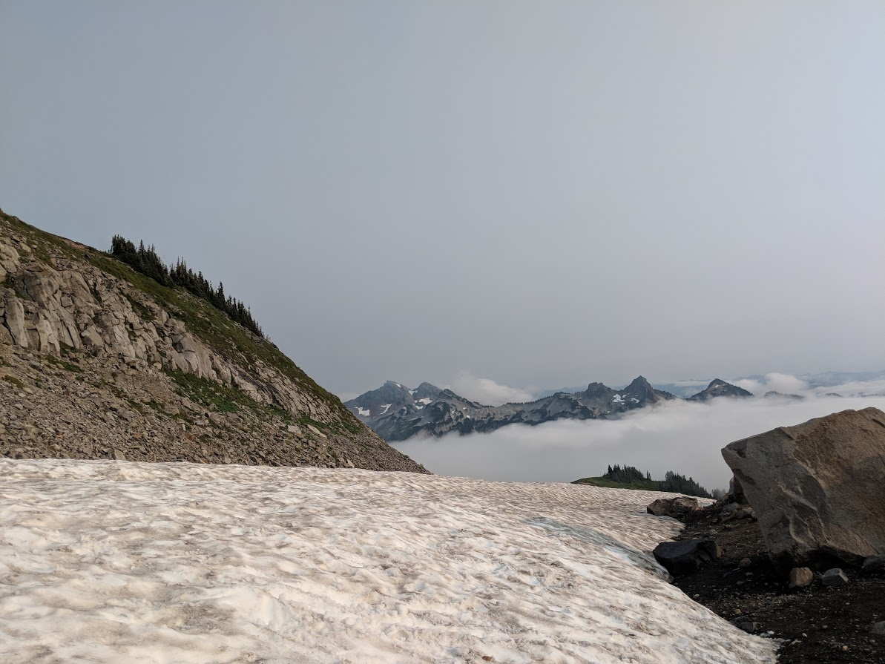

Hiking
Some of the hiking I've done in the past couple years, in reverse chronological order.
Olympic National Forest - Mount Ellinor Trail
Difficult due to the rapid elevation gain, but rewarding.
Mount Baker Snoqualmie National Forest - Snow Lake Trail
Similar to Lake 22.

Zion National Park - Zion Canyon Overlook Trail
I saw quite a few bighorn sheep on the drive to this hike.
Vatnajökull National Park - Skaftafellsjökull
One of my favorite hikes. See more of my Iceland photos here.
Saddle Mountain State Natural Area - Saddle Mountain Trail
On a weekend trip to Cannon Beach, Oregon.
Mount Rainier - Skyline Trail Loop
Alpine scenery.
 North Cascades - Lake 22
Don't feel the water before jumping in, it's freezing.